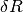
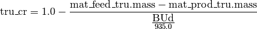

Reactor1G Class¶
Reactors are the most computationally complex of the nuclear fuel cycle components currently implemented. Bright handles nuclear reactors in two distinct object classes: a one neutron energy group methodology (implemented here) and a multi-group algorithm. Moreover, there are several different types of reactors. Each type has its own characteristic data library associated with it and takes on type-specific base case values. The reactor types that have been fully implemented thus far are a light water reactor (LWR) and a fast reactor (FR). You may read more about these on their own pages.
All one-group (1G) reactors share a common methodological backbone. This page describes what is fundamentally the same about one group reactor objects via the Reactor1G class. This is a subclass of FCComp. Moreover, all one-group reactor types have bright.Reactor1G as their parent. The type-specific reactor objects turn out to be relatively simple since most of the computational effort is in Reactor1G.
All one energy group reactors are based on a algorithm published by the author in Nuclear Engineering & Design, “A new method for rapid computation of transient fuel cycle material balances”.
Reactor1G Helper & Child Classes
All functionality may be found in the reactor1g module:
import bright.reactor1g
- class bright.reactor1g.Reactor1G¶
One-Group Reactor Fuel Cycle Component Class. Daughter of FCComp class.
Parameters : reactor_parameters : ReactorParameters, optional
A special data structure that contains information on how to setup and run the reactor.
track_params : string set, optional
A set of strings that represents what parameter data the reactor should store and set. Different reactor types may have different characteristic parameters of interest.
name : str, optional
The name of the reactor fuel cycle component instance.
Notes
Some data members and functions have names that end in ‘_F_’. This indicates that these are a function of fluence, the time integral of the flux. The ‘_Fd_’ suffix implies that the data is evaluated at the discharge fluence.
- B¶
This integer is the total number of batches in the fuel management scheme. B is typically indexed by b.
- phi¶
The nominal flux value (float) that the library for this reactor type was generated with. Used to correctly weight batch-specific fluxes.
- fuel_chemical_form¶
This is the chemical form of fuel as a dictionary or other mapping. Keys are often strings that represent isotopes while values represent the corresponding mass weights. The heavy metal concentration by the key “IHM”. This will automatically fill in the nuclides in mat_feed for the “IHM” weight. For example, LWRs typically use a UOX fuel form:
Reactor1G.fuel_chemical_form = {"IHM": 1.0, "O16": 2.0}
- coolant_chemical_form¶
This is the chemical form of coolant as a dictionary or other mapping. This uses the same notation as fuel_form except that “IHM” is no longer a valid key. The term ‘coolant’ is used in preference over the term ‘moderator’ because not all reactors moderate neutrons. For example, LWRs often cool the reactor core with borated water:
ReactorParamters.coolant_form = {} ReactorParamters.coolant_form["H1"] = 2.0 ReactorParamters.coolant_form["O16"] = 1.0 ReactorParamters.coolant_form["B10"] = 0.199 * 550 * 10.0**-6 ReactorParamters.coolant_form["B11"] = 0.801 * 550 * 10.0**-6
- rhoF¶
The fuel region density. A float in units of [g/cm^3].
- rhoC¶
The coolant region density. A float in units of [g/cm^3].
- P_NL¶
The reactor’s non-leakage probability (float). This is often used as a calibration parameter.
- target_BU¶
The reactor’s target discharge burnup (float). This is given in units of [MWd/kgIHM]. Often the actual discharge burnup BUd does not quite hit this value, but comes acceptably close.
- use_zeta¶
Boolaean to determine whether the thermal disadvantage factor is employed or not. LWRs typically set this as True while FRs have a False value.
- lattice_flag¶
Flag (str) that represents what lattice type the fuel assemblies are arranged in. Currently accepted values are “Planar”, “Spherical”, and “Cylindrical”.
- rescale_hydrogen_xs¶
Boolean to determine whether the reactor should rescale the Hydrogen-1 destruction rate in the coolant as a function of fluence. The scaling factor is calculated via the following equation

This is typically not done for fast reactors but is a useful correction for LWRs.
- r¶
The radius (float) of the fuel region [cm].
- l¶
The pitch or length (float) of the unit fuel pin cell [cm].
- S_O¶
The number of slots (float) in a fuel assembly that are open. Thus this is the number of slots that do not contain a fuel pin and are instead filled in by coolant.
- S_T¶
The total number of fuel pin slots (float) in a fuel assembly. For a 17x17 bundle this is 289.0.
- VF¶
The relative fuel region volume.
- VC¶
The relative coolant region volume.
- libfile¶
The path (str) to the reactor data library; usually something like “LWR.h5” or “FR.h5”.
- F¶
The fluence points that the reactor library is based on. This is a vector of floats that have units [n/kb]. This is read in from libfile.
- BUi_F_¶
The burnup of each initial isotope in the core as a function of fluence. This is a dictionary whose keys are initial nuclides and whose values are vectors of floats. This data has units of [MWd/kgIHM] and is read in from libfile.
- pi_F_¶
The neutron production rate of each initial isotope in the core as a function of fluence. This is a dictionary whose keys are initial nuclides and whose values are vectors of floats. This data has units of [neutrons/seconds] (abbr [n/s]) is read in from libfile.
- di_F_¶
The neutron destruction rate of each initial isotope in the core as a function of fluence. This is a dictionary whose keys are initial nuclides and whose values are vectors of floats. This data has units of [n/s] and is read in from libfile.
- Tij_F_¶
The transmutation matrix of each initial isotope in the core into daughter nuclides as a function of fluence. This is a dictionary whose keys are initial nuclides and whose values also dictionaries. These nested dictionaries have keys that are final nuclides and whose values are vectors of floats. This data has units of [kg_i/kgIHM] or kilogram of each initial nuclide per kg of total initial heavy metal. This matrix is read in from libfile.
- A_IHM¶
The atomic weight of the initial heavy metal (float).
- MWF¶
The molecular weight of the fuel (float).
- MWC¶
The molecular weight of the coolant (float).
- niF¶
Atomic number weight of the fuel as a function of initial nuclide. Map with zzaaam-integer keys and float values.
- niC¶
Atomic number weight of the coolant as a function of initial nuclide. Map with zzaaam-integer keys and float values.
- miF¶
Mass weight of the fuel as a function of initial nuclide. Map with zzaaam-integer keys and float values.
- miC¶
Mass weight of the coolant as a function of initial nuclide. Map with zzaaam-integer keys and float values.
- NiF¶
Number density of the fuel as a function of initial nuclide. Map with zzaaam-integer keys and float values.
- NiC¶
Number density of the coolant as a function of initial nuclide. Map with zzaaam-integer keys and float values.
- dF_F_¶
The neutron destruction rate [n/s] of the fuel as a function of fluence. This is the linear combination of di_F_ for all initial nuclides using miF as weights.
- dC_F_¶
The neutron destruction rate [n/s] of the coolant as a function of fluence. This is the linear combination of di_F_ for all initial nuclides using miC as weights. If the disadvantage factor is used, then zeta_F_ is multiplied by the linear combination before being assigned to dC_F_.
- BU_F_¶
The reactor burnup [MWd/kgIHM] as a function of fluence. This is the linear combination of BUi_F_ for all initial nuclides using miF as weights.
- P_F_¶
The full-core neutron production rate [n/s] as a function of fluence. This is the linear combination of pi_F_ for all initial nuclides using miF as weights. (Note: the coolant does not have a production rate). The linear combination is subsequently multiplied by the non-leakage probability, P_NL, before being assigned to P_F_.
- D_F_¶
The full-core neutron destruction rate [n/s] a function of fluence. This is the sum of dF_F_ and dC_F_.
- k_F_¶
The multiplication factor of the core. Calculated from P_F_ divided by D_F_. This attribute is unitless and not often used.
- Mj_F_¶
The transmutation matrix of the fuel (specifically, mat_feed) into the jth nuclide as a function of fluence. Used with the discharge fluence Fd to calculate mat_prod. This object is therefore a dictionary from zzaaam-integers to vectors of floats.
- zeta_F_¶
The thermal disadvantage factor as a function of fluence. This attribute is unitless and is set when calc_zeta is called.
- fd¶
The lower index of the discharge fluence (int).
- Fd¶
The discharge fluence [n/kb] (float). May be used to calculate the amount of time that the fuel was irradiated.
- BUd¶
The discharge burnup [MWd/kgIHM] (float). Unless something went very wrong, this should be rather close in value to target_BU.
- k¶
This is the multiplication factor of the reactor at discharge. This should be very close in value to 1.0.
- mat_feed_u¶
The input uranium material, mat_feed.sub_u().
- mat_feed_tru¶
The input transuranic material, mat_feed.sub_tru().
- mat_feed_lan¶
The input lanthanide material, mat_feed.sub_lan().
- mat_feed_act¶
The input actininide material, mat_feed.sub_act().
- mat_prod_u¶
The output urnaium material, mat_prod.sub_u().
- mat_prod_tru¶
The output transuranic material, mat_prod.sub_tru().
- mat_prod_lan¶
The output lanthanide material, mat_prod.sub_lan().
- mat_prod_act¶
The output actininide material, mat_prod.sub_act().
- deltaR¶
The  value of the core with the current mat_feed. This is equal to the production rate minus the destruction rate at the target burnup:
deltaR = batch_average(target_BU, "P") - batch_average(target_BU, "D")
This is computed via the calc_deltaR() method.
- tru_cr¶
The transuranic conversion ratio of the reactor (float). This is set via the calc_tru_cr() method.
- SigmaFa_F_¶
The fuel macroscopic absorption cross section [1/cm].
- SigmaFtr_F_¶
The fuel macroscopic transport cross section [1/cm].
- kappaF_F_¶
One over the thermal diffusion length of the fuel [1/cm].
- SigmaCa_F_¶
The coolant macroscopic absorption cross section [1/cm].
- SigmaCtr_F_¶
The coolant macroscopic transport cross section [1/cm].
- kappaC_F_¶
One over the thermal diffusion length of the coolant [1/cm].
- lattice_E_F_¶
The lattice function E(F).
- lattice_F_F_¶
The lattice function F(F).
- initialize(reactor_parameters)¶
The initialize() method for reactors copies all of the reactor specific parameters to this instance. Additionally, it calculates and sets the volumes VF and VC.
Parameters : reactor_parameters : ReactorParameters
A special data structure that contains information on how to setup and run the reactor.
- loadlib(libfile="reactor.h5")¶
This method finds the HDF5 library for this reactor and extracts the necessary information from it. This method is typically called by the constructor of the child reactor type object. It must be called before attempting to do any real computation.
Parameters : libfile : str
Path to the reactor library.
- fold_mass_weights()¶
This method performs the all-important task of doing the isotopically-weighted linear combination of raw data. In a very real sense this is what makes this reactor this specific reactor. The weights are taken as the values of mat_feed. The raw data must have previously been read in from loadlib().
Warning
Anytime any reactor parameter whatsoever (mat_feed, P_NL, etc) is altered in any way, the fold_mass_weights() function must be called to reset all of the resultant data. If you are unsure, please call this function anyway to be safe. There is no harm in calling this method multiple times.
- calc_Mj_F_()¶
This function calculates and sets the Mj_F_ attribute from mat_feed and the raw reactor data Tij_F_.
- calc_Mj_Fd_()¶
This function evaluates Mj_F_ calculated from calc_Mj_F_() at the discharge fluence Fd. The resultant isotopic dictionary is then converted into the mat_prod mass stream for this pass through the reactor. Thus if ever you need to calculate mat_prod without going through calc(), use this function.
- calc_mat_prod()¶
This is a convenience function that wraps the transmutation matrix methods. It is equivalent to:
#Wrapper to calculate discharge isotopics. calc_Mj_F_() calc_Mj_Fd_()
- calc_sub_mats()¶
This sets possibly relevant reactor input and output sub-materials. Specifically, it computes the attributes:
- mat_feed_u
- mat_feed_tru
- mat_feed_lan
- mat_feed_act
- mat_prod_u
- mat_prod_tru
- mat_prod_lan
- mat_prod_act
- calc_tru_cr()¶
This calculates and sets the transuranic conversion ratio tru_cr through the equation:

Returns : tru_cr : float)
The value of the transuranic conversion ratio just calculated.
- calc_deltaR(input=None)¶
Calculates and sets the deltaR value of the reactor. This is equal to the production rate minus the destruction rate at the target burnup:
deltaR = batch_average(target_BU, "P") - batch_average(target_BU, "D")
Parameters : input : dict or Material or None, optional
If input is present, it set as the component’s mat_feed. If input is a isotopic dictionary (zzaaam keys, float values), this dictionary is first converted into a Material before being set as mat_feed.
Returns : deltaR : float
deltaR value
- fluence_at_BU(burnup)¶
This function takes a burnup value and returns a special fluence point object. The fluence point is an amalgamation of data where the at which the burnup occurs. This object instance FP contains three pieces of information:
FP.f #Index immediately lower than where BU achieved (int) FP.F #Fluence value itself (float) FP.m #Slope dBU/dF between points f and f+1 (double)
Parameters : burnup : float
Burnup [MWd/kgIHM] at which to calculate the corresponding fluence.
Returns : fp : FluencePoint
A class containing fluence information.
- batch_average(BUd, PDk_flag="K")¶
Finds the batch-averaged P(F), D(F), or k(F) when at discharge burnup BUd. This function is typically iterated over until a BUd is found such that k(F) = 1.0 + err.
Parameters : BUd : float
The discharge burnup [MWd/kgIHM] to obtain a batch-averaged value for.
PDk_flag : str , optional
Flag that determines whether the neutron production rate “P” [n/s], the neutron destruction rate “D” [n/s], or the multiplication factor “K” is reported in the output.
Returns : PDk : float
The batch averaged neutron production rate, neutron destruction rate, or the multiplication factor as determined by the input flag.
- batch_average_k(BUd)¶
Convenience function that calls batch_average(BUd, “K”).
Parameters : BUd : float
The discharge burnup [MWd/kgIHM] to obtain a batch-averaged value for.
Returns : k : float
The batch averaged multiplication factor.
- BUd_bisection_method()¶
Calculates the maximum discharge burnup via the Bisection Method for a given mat_feed in this reactor. This iterates over values of BUd to find a batch averaged multiplication factor that is closest to 1.0.
Other root finding methods for determining maximum discharge burnup are certainly possible.
- run_P_NL(pnl)¶
Performs a reactor run for a specific non-leakage probability value. This requires that mat_feed be (meaningfully) set and is for use with calibrate_P_NL_to_BUd().
This function amounts to the following code:
self.P_NL = pnl self.fold_mass_weights() self.BUd_bisection_method()
Parameters : pnl : float
The new non-leakage probability for the reactor.
- calibrate_P_NL_to_BUd()¶
Often times the non-leakage probability of a reactor is not known, though the input isotopics and the target discharge burnup are. This function handles that situation by calibrating the non-leakage probability of this reactor P_NL to hit its target burnup target_BU. Such a calibration proceeds by bisection method as well. This function is extremely useful for benchmarking calculations.
- calc(input=None)¶
Since many other methods provide the computational heavy-lifting of reactor calculations, the calc() method is relatively simple:
self.mat_feed = input self.fold_mass_weights() self.BUd_bisection_method() self.calc_mat_prod() return self.mat_prod
As you can see, all this function does is set burn an input stream to its maximum discharge burnup and then reports on the output isotopics.
Parameters : input : dict or Material or None, optional
If input is present, it set as the component’s mat_feed. If input is a nuclide dictionary (zzaaam keys, float values), this dictionary is first converted into a Material before being set as mat_feed.
Returns : output : Material
mat_prod
- lattice_E_planar(a, b)¶
Calculates the lattice function E(F) for planar geometry. Sets value as lattice_E_F_.
Parameters : a : float
Fuel region radius equivalent [cm].
b : float
Unit fuel cell pitch length equivalent [cm].
- lattice_F_planar(a, b)¶
Calculates the lattice function F(F) for planar geometry. Sets value as lattice_F_F_.
Parameters : a : float
Fuel region radius equivalent [cm].
b : float
Unit fuel cell pitch length equivalent [cm].
- lattice_E_spherical(a, b)¶
Calculates the lattice function E(F) for spherical geometry. Sets value as lattice_E_F_.
Parameters : a : float
Fuel region radius equivalent [cm].
b : float
Unit fuel cell pitch length equivalent [cm].
- lattice_F_spherical(a, b)¶
Calculates the lattice function F(F) for spherical geometry. Sets value as lattice_F_F_.
Parameters : a : float
Fuel region radius equivalent [cm].
b : float
Unit fuel cell pitch length equivalent [cm].
- lattice_E_cylindrical(a, b)¶
Calculates the lattice function E(F) for cylindrical geometry. Sets value as lattice_E_F_.
Parameters : a : float
Fuel region radius equivalent [cm].
b : float
Unit fuel cell pitch length equivalent [cm].
- lattice_F_cylindrical(a, b)¶
Calculates the lattice function F(F) for cylindrical geometry. Sets value as lattice_F_F_.
Parameters : a : float
Fuel region radius equivalent [cm].
b : float
Unit fuel cell pitch length equivalent [cm].
- calc_zeta()¶
This calculates the thermal disadvantage factor for the geometry specified by lattice_flag. The results are set to zeta_F_. This is ostensibly done via the methodology detailed in Lamarsh’s Nuclear Reactor Theory.
Unfortunately, this formulation for the disadvantage factor is only valid in the case where a << b! Often times, modern (thermal) reactors do not satisfy this requirement. We instead have a ‘thin moderator’situation.
To fix this problem properly requires going to a multi-region diffusion/transport calculation. Doing so is beyond the scope of Bright at this time and certainly beyond the aspirations of a one-group methodology. A strategy that is more in-line with current practice is to use the results of a more sophisticated method, interpolate over them, and use them here.
Thus in the case where 0.1 < VF/VC, where the fuel is greater than 10% of the coolant, the above strategy is what is implemented. A baseline disadvantage factor is determined from data presented in “Thermal disadvantage factor calculation by the multi-region collision probability method” by B. Ozgener, and H. A. Ozgener, Institute of Nuclear Energy, Istanbul Technical University 80626 Maslak, Istanbul, Turkey, Received 28 January 2003; accepted 20 May 2003. Available online 6 March 2004. This baseline value happens to be a function of VF/VC.
The Lamarsh method is then used as a scaling factor on the baseline function to account for variations in fuel composition and fluence.
- calc_zeta_planar()¶
This calculates the thermal disadvantage factor for a planar geometry. The results are set to zeta_F_.
- calc_zeta_spherical()¶
This calculates the thermal disadvantage factor for a spherical geometry. The results are set to zeta_F_.
- calc_zeta_cylindrical()¶
This calculates the thermal disadvantage factor for a clyindrical geometry. The results are set to zeta_F_.